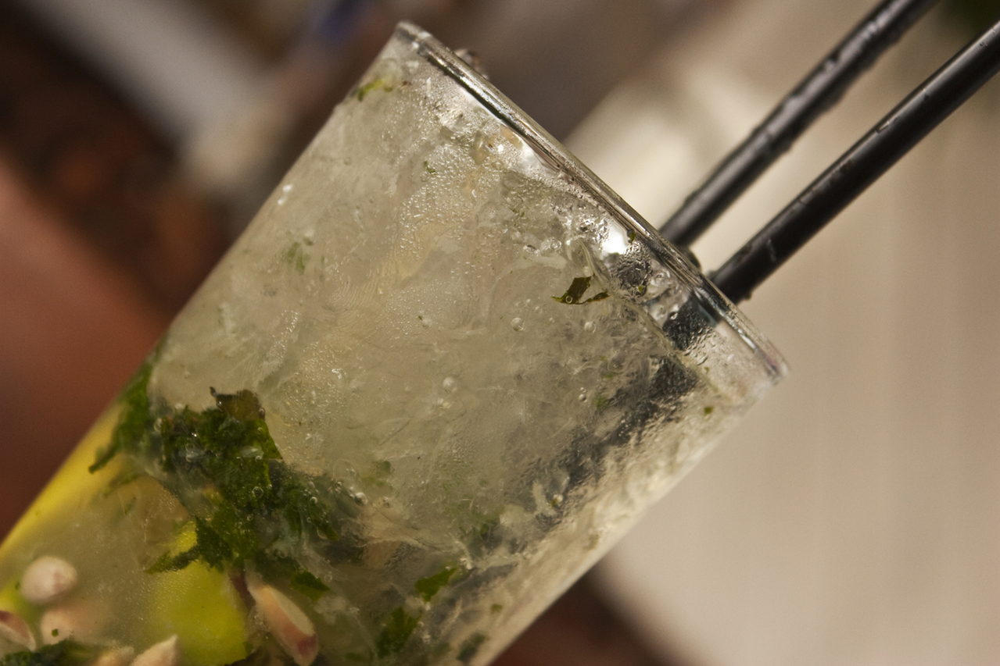

How to make a Jager Mojito

If you're a fan of Jagermeister, you are going to love this twist on the classic mojito!
ingredients
- 3 fresh mint
- 1 oz simple syrup
- small lime juice
- 1.5 oz Jagermeister herbal liqueur
- Sprite
preparation
-
Firstly, start by muddling the mint in the simple sryup.
-
Then add some lime juice.
-
Add an ounce of Jagermeister, or if you want to be adventurous you could make it double!
-
Finally, you can top it off with Sprite/7up or a soda of your choice.
-
Enjoy responsibly!